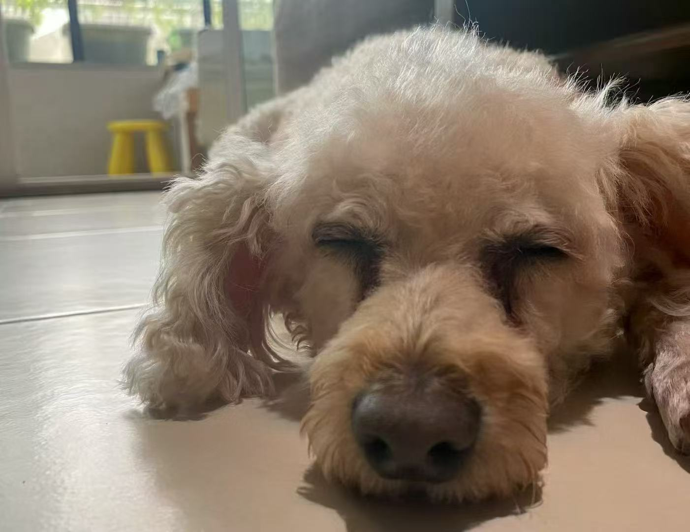
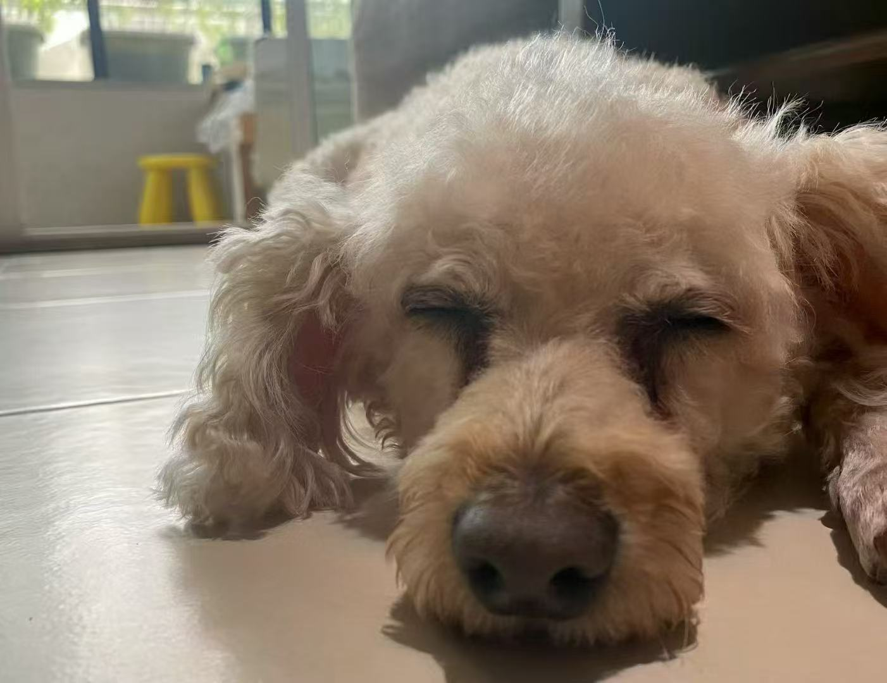
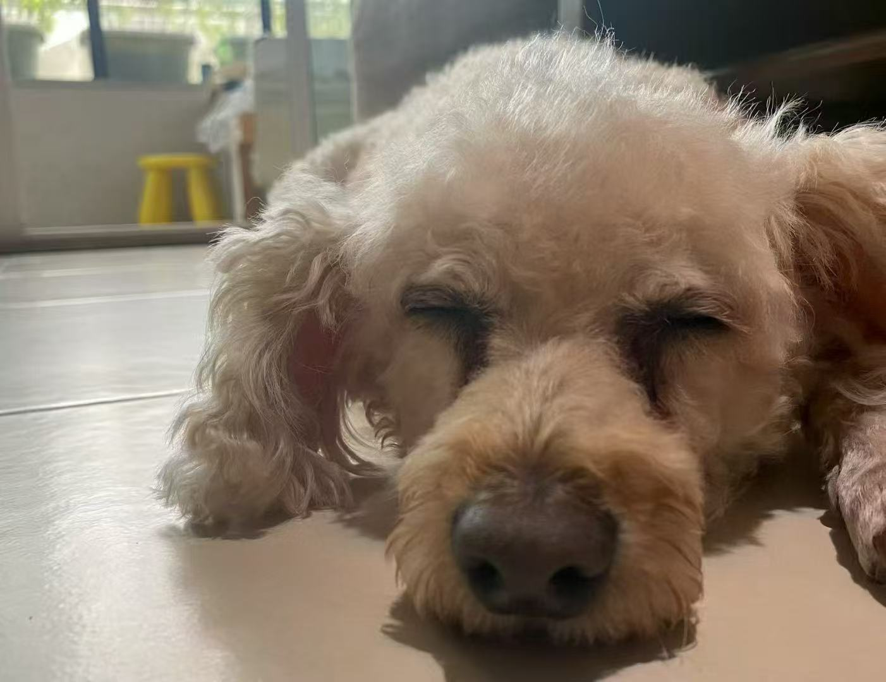

2025年12月18日 · 晴 ☀️
今天带馒头去城市公园散步，他第一次看到松鼠！
瞬间像装了火箭一样冲出去，差点没拉住 leash 😅
虽然没抓到松鼠，但他开心得一路蹦跳回家，晚上睡得特别香～
 

🐾 记录者：馒头的家长 | 摄影 & 文字
今天带馒头去城市公园散步，他第一次看到松鼠！
瞬间像装了火箭一样冲出去，差点没拉住 leash 😅
虽然没抓到松鼠，但他开心得一路蹦跳回家，晚上睡得特别香～

🐾 记录者：馒头的家长 | 摄影 & 文字